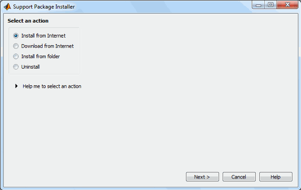
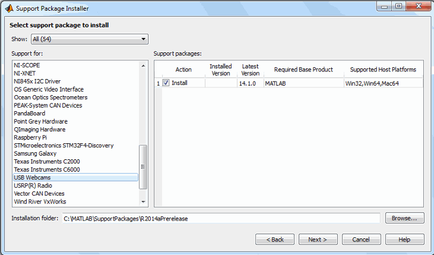
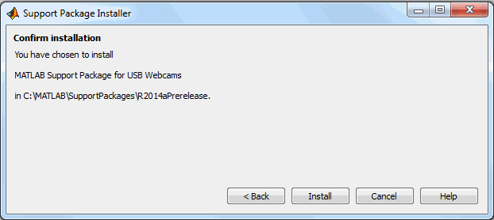

You can use MATLAB® Webcam support to bring live images from any USB Video Class (UVC) Webcam into MATLAB. This includes Webcams that may be built into laptops or other devices, as well as Webcams that plug into your computer via a USB port. To use the Webcam feature, you must install the Webcam support package.
Webcam support is available through Hardware Support Packages. Using this installation process, you download and install the following files on your host computer:
MATLAB files for Webcam support
An example that shows how to acquire images using a Webcam
Installing the Support Package
In MATLAB type:
supportPackageInstaller
to open the Support Package Installer.
You can also open the installer from MATLAB by selecting Home > Environment > Add-Ons > Get Hardware Support Packages.
On the Select an action screen, select Install from Internet, and click Next. This option is selected by default. Support Package Installer downloads and installs the support package and third-party software from the Internet.

On the Select support package to install screen,
select USB Webcams from the list.

Accept or change the Installation folder, and click Next.
Note: You must have write privileges for the Installation folder. |
If you are prompted to log in to your MathWorks® account, click Log In to continue.
On the MATHWORKS AUXILIARY SOFTWARE LICENSE
AGREEMENT screen, select the I accept check
box, and click Next.
On the Confirm installation screen, Support Package Installer confirms that you are installing the MATLAB Support Package for USB Webcams, and lists the installation location. Confirm your selection, and click Install.

Support Package Installer displays a progress bar while it downloads and installs the Webcam support package.
After the installation is complete, you will see a confirmation message on the Support Package Installer Install/update complete screen. Click Finish to close the Support Package Installer.
If you selected the Show support package examples option (recommended), Help displays the example.
You must restart your computer to complete the installation. Click OK and then restart your computer.